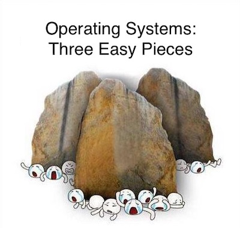
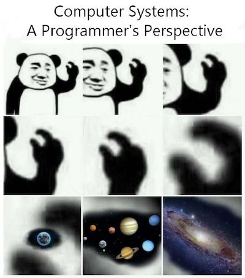

《操作系统》教科书与参考资料
这个书单可能已经显得陈旧过期了 (jyy 现在教科书读得少了)，因此大家有推荐的教科书，欢迎告诉我！同时，大语言模型也冲击传统的学习方式：正确地提问将是未来学习中最重要的技能。当然无论如何，我们都建议大家多读书：
- 计算机系统中的很多知识是关联的，因此你对体系结构、编译器、软件工程等领域的理解都会加深对操作系统的理解；反之也一样。认识通常是 “螺旋式上升” 的；
- 计算机系统不是纸上谈兵，因此学习很多技术是非常重要的，例如如何使用 Linux 系统调用编程、如何使用正则表达式、如何使用 profiler 等等。技术类书籍是掌握这些实践的很好切入点；
- 每一本书的作者都有他们独到的视角 (某些为了凑数编教材而编教材的除外)。因此也许某个作者的思维方式就特别适合你，读起来就会很轻松。
教科书
 (感谢 2017 级同学的投稿)
- “CSAPP” Randal E. Bryant and David R. O'Hallaron. Computer Systems: A Programmer's Perspective (3ed). Pearson, 2017. 全面的手册和参考书；LLM Copilot 阅读效果更佳。
 (感谢 yzh 的投稿)
参考资料
1. 大语言模型
吸收了天地精华的大语言模型，请向他们提问。对他们的回答请谨慎求证。
2. 编程基础
3. UNIX/Linux 编程
4. 操作系统原理
- 陈海波、夏虞斌. 现代操作系统：原理与实现. 机械工业出版社, 2020.
- Thomas Anderson, Michael Dahlin. Operating Systems: Principles and Practice (2nd Edition). Recursive Books, 2014.
- John R. Levine. Linkers and Loaders. Morgan-Kauffman, 1999.
- Robert Love. Linux Kernel Development: A Thorough Guide to the Design and Implementation of the Linux Kernel (3rd Edition). Addison-Wesley, 2010.
- Marshall Kirk McKusick, Keith Bostic, Michael J. Karels, and John S. Quarterman. The Design and Implementation of the 4.4BSD Operating System. Addison-Wesley Longman, 1996.
5. 开源操作系统实现
6. Finally, The Friendly Manual